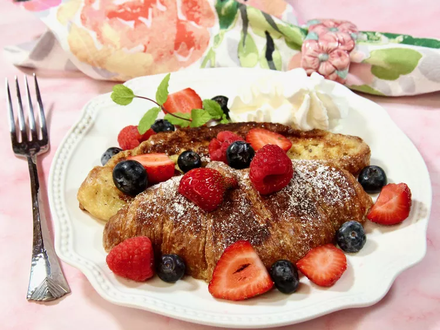

Crossian French Toast

An easy and impressive breakfast or brunch, this recipe is the perfect choice for special occasions or holidays.
Serve warm with your favorite toppings.
Some suggestions are powdered sugar, chopped nuts, cinnamon sugar, berries, maple syrup, blueberry or strawberry syrup, and whipped cream
.
Ingredients
- 4 large croissants, halved horizontally, left out overnight
- 3 large eggs
- ½ cup half-and-half
- 1 tablespoon white sugar
- 2 teaspoons vanilla extract
- ½ teaspoon ground cinnamon
- ¼ teaspoon salt
- 1 pinch ground nutmeg
- 2 tablespoons unsalted butter
Directions
- Preheat the oven to 200 degrees F (95 degrees C).
- Whisk eggs, half-and-half, sugar, vanilla, cinnamon, salt, and nutmeg together in a shallow bowl. Dip each croissant half into the egg mixture, one at a time, flipping it and lightly pressing down, until well coated.
- Melt the butter in a large skillet over medium heat; add four croissant halves, cut side down. Fry until browned on both sides, turning once, 2 to 3 minutes per side. Transfer to the oven to keep warm while you cook the remaining croissants.
- Serve warm with your favorite toppings.
Cook's Note
It's important that the croissants are dry before dipping. As an alternative to leaving the croissants sit out overnight, you can place the sliced croissants on a baking sheet, and toast in the oven at 200 degrees F (95 degrees C) until dry, 12 to 15 minutes.
Feel free to substitute almond milk or low-fat milk for the half and half.
| Calories |
436 |
| Fat |
27g |
| Carbs |
36g |
| Protein |
11g |
Home